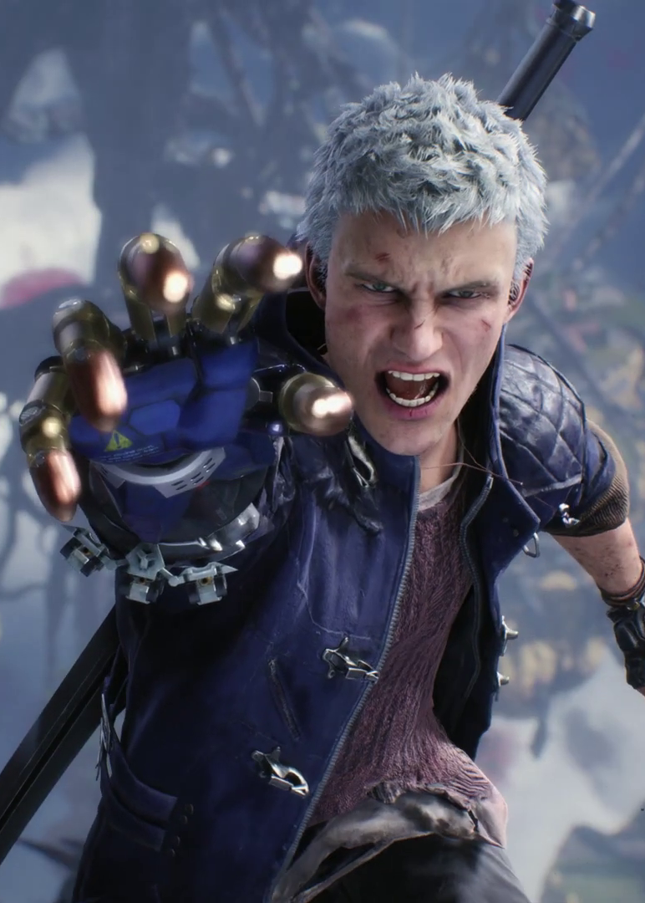
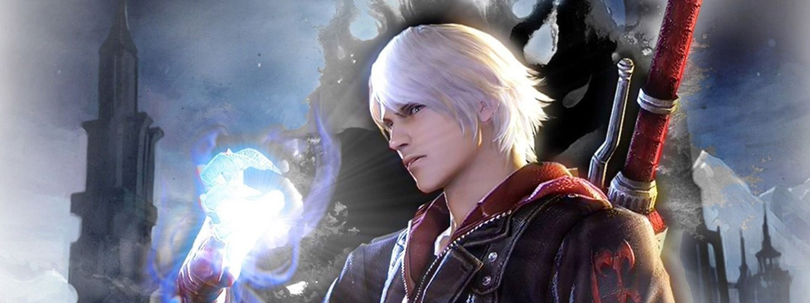
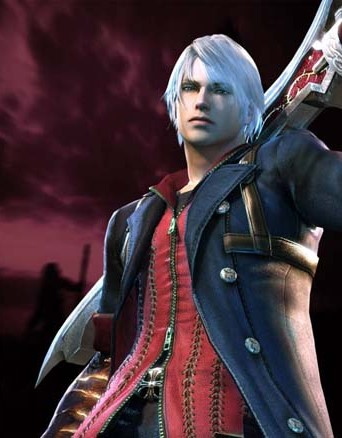
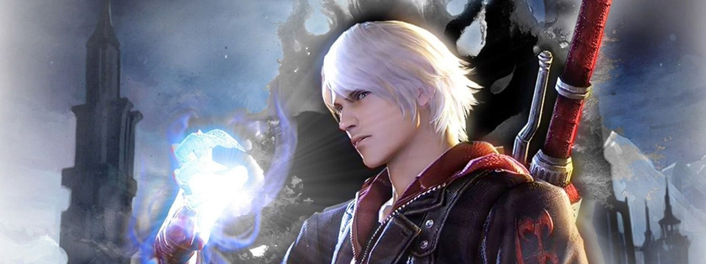
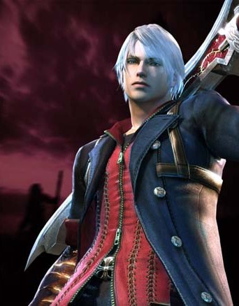
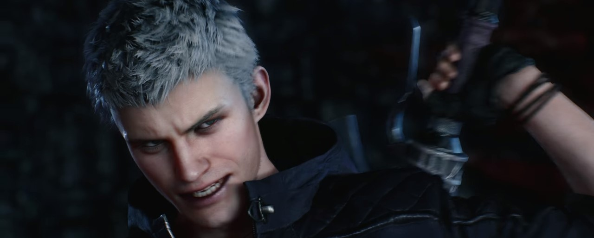

Nero é um dos principais protagonistas da série Devil May Cry. Ele apareceu pela primeira vez como um personagem jogável em Devil May Cry 4 e, mais tarde, em Devil May Cry 5. Ele é filho de Vergil, sobrinho do Lendário Devil Hunter Dante e neto do Lendário Dark Knight Sparda. Ele foi criado em Fortuna e serviu como um Cavaleiro Sagrado na Ordem da Espada, um grupo religioso que adora Sparda e luta para proteger o mundo dos demônios.
Em Devil May Cry 4, no entanto, ele é forçado a lutar contra a Ordem depois de encontrar Dante e descobrir uma conspiração para conquistar o mundo usando O Salvador. Em Devil May Cry 5, Nero é um caçador de demônios mais experiente que, desde então, mudou sua operação para um ramo móvel de Devil May Cry. Ele se encontra lutando contra uma invasão demoníaca enquanto persegue uma figura misteriosa (mais tarde revelou ser seu próprio pai biológico, Vergil, no final) que separou o Devil Bringer.
Nero

Nero foi encontrado ainda bebê pela família de Credo e Kyrie em Fortuna e foi criado sob seus cuidados. Quando criança, ele foi intimidado por outras crianças que alegavam que sua mãe era uma prostituta. Assim como Credo, Nero se juntou à Ordem da Espada para derrotar os demônios que ameaçavam a cidade, embora Nero muitas vezes trabalhasse sozinho.
Como foi mencionado em um relatório de incidente, vários demônios apareceram repentinamente da Floresta Mitis e atacaram Fortuna. Nero estava presente no local e exterminou todos os demônios, mas não conseguiu evitar que os demônios ferissem Kyrie e seu próprio ombro. A espada de Nero, a Red Queen, também foi danificada e enviada para conserto. Kyrie se recuperou completamente, mas o ombro de Nero nunca se curou corretamente e se transformou em outra coisa. Inicialmente ele acreditou ser uma infecção, mas, ao perceber que era um poder demoníaco, ele começou a treinar em segredo.
Em Devil May Cry 4:
No dia do Festival da Lâmina, Nero mal consegue chegar à apresentação de Kyrie a tempo depois de lidar com um grupo de demônios, com um homem de vermelho secretamente observando-o dos telhados. Ele deixa um presente para ela e se prepara para ir embora, cansado da pregação de Sanctus. Antes que ele pudesse, porém, o misterioso homem de vermelho irrompe pelo teto de vidro durante uma oração e mata Sanctus, o líder da Ordem. Credo e um batalhão de cavaleiros cercam Dante, mas são completamente derrotados. Kyrie, vendo que Dante vai matar seu irmão, finalmente escapa do controle de Nero sobre ela e corre para eles, mas é derrubada no processo. Quando Nero vê o homem de vermelho pairando sobre Kyrie, ele o chuta Dante no rosto e ordena que Credo e Kyrie busquem ajuda enquanto ele atrapalha Dante.
Os dois lutam, e Nero é forçado a revelar seu Devil Bringer. Com isso, ele foi capaz de derrubar Dante para trás e empalá-lo com sua própria espada na estátua de Sparda. Mas Dante, que não é apenas um mero mortal, se liberta e pula. Nero afirma que Dante não é humano, ao que Dante então puxa Rebellion e comenta que eles são o mesmo, e aponta os cavaleiros que ele matou, que acabaram por ser demônios. Confuso, Nero observa enquanto Dante foge da cena. Pouco depois, Kyrie retorna a espada de Nero, Red Queen, a pedido de Credo. Credo dá ordem a Nero, para perseguir o homem de vermelho, com testemunhas que o viram a caminho do Castelo de Fortuna. De repente, os três sentem o prédio estremecer e partem para descobrir os cidadãos da cidade sendo atacados por demônios. Enquanto Kyrie e Credo conduzem os sobreviventes de volta ao quartel-general, Nero luta contra os demônios restantes. Para perseguir Dante, Nero passa por Fortuna, que está totalmente tomada por demônios.
Nero então chega ao Castelo de Fortuna, enfrenta inimigos e chefes até que começa seguir em direção à sede da Ordem, acreditando que Credo sabe mais sobre o que está acontecendo. Ele cruza uma ponte que leva a uma caverna escondida pelas Cataratas Foris e se encontra na Floresta Mitis. Aqui, Dante esbarra nele, mas o encontro é muito breve. Dante pede desculpas a Nero, dizendo que "vai ter que esperar", e então pula de um penhasco. Nero luta contra incontáveis demônios em seu caminho pela floresta e, eventualmente, bane Echidna, a Víbora, um demônio semelhante a uma cobra que trata os demônios da floresta como seus filhos. Depois disso, Nero chega à Sede sem outras surpresas.
Na entrada é recebido por Credo, ao que Nero pergunta quem é Dante. Credo saca sua lâmina e exclama que Nero não tem autoridade para exigir respostas dele. Nero reflexivamente usa seu Devil Bringer para bloquear um ataque de Credo, expondo seu segredo. Percebendo que Agnus, que trouxe notícias do poder demoníaco de Nero aos comandantes das Ordens momentos antes, estava certo, Credo se transforma em sua forma de Angelo e declara que Nero está preso. Uma luta começa, após a qual Credo retorna à sua forma humana e Nero sai vitorioso, mas Kyrie, aparecendo aparentemente do nada, grita ao ver o que ela interpreta como Nero, com um braço de demônio, tentando matar Credo. Nero tenta explicar e acalmar Kyrie, mas Agnus se inclina para virar Kyrie contra Nero, fazendo-a pensar que ele é um demônio, a mantém como refém, revelando o desejo de Sanctus de usá-la para chegar a Nero. Credo fica furioso com a traição enquanto Agnus foge com Kyrie, então ele pede a Nero para deixar de lado essa luta por enquanto e jura obter a verdade de Sanctus. Enquanto Credo voa para ver Sanctus, Nero persegue Agnus e Kyrie.
Nero depois de chegar até Agnus, consegue derrotá-lo, e quando está prestes a resgatar Kyrie é interrompido por um exército de Bianco Angelos, liderado por ninguém menos que o próprio Sanctus, na armadura de um Alto Angelo nada menos, se lança para ajudá-lo. Enquanto Sanctus sai com Kyrie, Nero pula atrás dela, mas ele só consegue agarrar seu colar, que ele deu a ela como um presente na catedral. Nero vai então mais uma vez atrás de Kyrie.
Durante o seu caminho, Nero acaba encontrando Dante, que pede que Nero devolva a Yamato para ele, Nero recusa e então os dois travam em uma batalha. Dante acaba vitorioso e deixa Nero que agora está de cabeça fria, continuar com a espada. Nero mais tarde encontra Sanctus ao lado de uma estátua gigante semelhante a Sparda, que é o Salvador. Sanctus pergunta a Nero se ele deseja se render e formar o núcleo do Salvador junto com Kyrie, no qual Nero se recusa e tenta resgatá-la, mas falha e cai na armadilha de Sanctus. No processo, Sanctus pega o Yamato de Nero. De repente, Credo aparece, enfurecido porque Sanctus havia usado Kyrie, e ataca seu antigo superior. Sanctus o atravessa com Yamato, causando um ferimento mortal, e Credo cai do Salvador, mas é pego por Dante. Ele, junto com Trish, testemunha como Nero é absorvido pelo coração do Salvador. O Salvador logo desperta e voa em direção a Fortuna. Credo pede a Dante para honrar um último pedido: salvar Kyrie e Nero, após isso ele acaba morrendo.
Muito mais tarde, Dante, tendo recuperado Yamato e destruído todos os Portões do Inferno, enfrenta o Salvador. Depois de enfraquecer o exterior do Salvador, Dante empurra Yamato no centro da estátua, despertando Nero e permitindo que ele escape do órgão semelhante a um coração que o aprisiona. Depois de completar uma série de testes no Salvador, Nero finalmente confronta Sanctus. Sanctus, tendo alcançado níveis ainda maiores de poder com os Sparda, pergunta por que Nero traiu a Ordem. Nero responde que Sanctus cometeu atos sujos o suficiente para fazer Nero odiá-lo. Durante suas trocas, Sanctus também zomba de Nero por ser contido pelo amor. Nero finalmente derrota Sanctus dentro do Salvador, destruíndo seu coração e escapando com Kyrie de lá de dentro.
Nero já do lado de fora, encontra Dante, com quem troca agradecimentos e amizade. Com Dante prestes a partir, Nero tenta devolver Yamato para ele, mas ele se recusa a pegá-lo, dizendo que agora está confiado a Nero. Em seus momentos finais juntos, Nero pergunta a Dante se eles se encontrarão novamente, mas Dante apenas acena vagamente em resposta.
Kyrie se junta a Nero quando os dois concordam que está tudo acabado e, embora a cidade esteja em ruínas, eles não expressam arrependimento. Em vez disso, eles admitem seu desejo de ficarem juntos. Apesar do poder demoníaco de Nero, Kyrie mostra total aceitação dele. Nero devolve o colar para ela e eles quase se beijam, mas são interrompidos por alguns espantalhos restantes. Nero os luta enquanto Kyrie espera e também concorda em beijá-lo mais tarde na cena final. Depois de derrotar o demônio, Nero e Kyrie são vistos de mãos dadas enquanto olham à distância.

Em Devil May Cry 5, Antes do Pesadelo:
Ao longo dos cinco anos seguintes, Nero se encontrou com muitas pessoas, como repórteres e romancistas ocultistas, que estavam investigando o incidente do Salvador. A certa altura, Nero conheceu um jornalista ocultista chamado Jeffrey Turner da revista "Occult Times", respondeu vagamente às suas perguntas e tirou uma foto de si mesmo, mas seu rosto estava obscurecido. Como o orfanato Fortuna não foi reconstruído após o incidente, Nero e Kyrie acolheram três jovens órfãos: Julio, Kyle e Carlo. No entanto, o estilo de vida deles era muito simples, já que não havia muito trabalho para Nero fazer em Fortuna, fosse caçar demônios ou ajudar os habitantes locais, e Kyrie geralmente recusava o pagamento em dinheiro, então eles frequentemente eram pagos em comida e outros itens essenciais.
No ano seguinte, Nero e Kyrie chegaram à conclusão de que deveriam fazer sua própria filial móvel do Devil May Cry para que Nero pudesse encontrar mais trabalho fora de Fortuna e ganhar mais dinheiro para se sustentar e aos órfãos. Como eles não tinham muito dinheiro, Nero comprou um trailer quebrado e começou a trabalhar com Nico na reforma. Um dia em abril, Nero e Nico estavam trabalhando no trailer, com Nico reclamando que ela tinha se tornado a "mecânica de estimação" de Nero, mas Nero disse que Nico ainda lhe devia por ter dado a ela os documentos. Quando Kyrie os chamou para jantar, Nero disse a Nico para ir na frente dele e começou a limpar quando percebeu uma figura encapuzadafora da garagem. Pensando que o homem era um sem-teto, Nero casualmente o convidou para comer com ele e Kyrie, sem perceber que o homem encapuzado havia entrado na garagem sem uma resposta. Suspeito, Nero questionou o que o estranho queria e percebeu que seu Devil Bringer estava brilhando, sinalizando que o estranho era um demônio. Ouvindo Kyrie chamando por ele, Nero a avisou para ficar longe, deixando-se aberto para um ataque do estranho, que então arrancou o Devil Bringer do braço de Nero. Enquanto o homem encapuzado de alguma forma usou Yamato para criar um portal para se teletransportar para longe, Nero sangrou profusamente enquanto tentava fracamente parar o homem. Nero logo desmaiou com a perda de sangue quando Kyrie e Nico chegaram ao local e tentaram estancar o sangramento enquanto chamavam um hospital para obter ajuda.
Nas semanas seguintes, Nero permaneceu em coma e acabou acordando em seu quarto de hospital para encontrar V ao lado de sua cama. Sem seu Devil Bringer para lhe dizer se V era um demônio ou não, Nero questionou V, que lhe disse que conhecia o demônio que roubou seu braço e que Dante estava em seu caminho para lutar contra ele, já que ele contratou Dante para vencer o demônio devido a V estar atrás dele também. V convidou Nero para se juntar à missão porque ele não acha que Dante pode derrotar o demônio sozinho, o que Nero tinha dúvidas. Nero também destacou que sua condição atual não lhe permite lutar muito bem. Embora ele não confie em V, Nero desejava recuperar seu Devil Bringer e estava acostumado a lutar com um braço, pois costumava esconder muito seu Devil Bringer. No entanto, Nero estava preocupado com Kyrie, e já que ele acreditava que ela não o deixaria sair depois do que tinha acontecido com ele, Nero disse a V para esperar enquanto ele se esgueirava de volta para a garagem para que pudesse pegar suas armas. Depois, Nero e V viajaram para Red Grave City em um helicóptero e entraram na árvore Qliphoth.
Vendo Dante lutando de longe, Nero questionou por que ele estava aqui, já que parece que Dante estava se segurando bem o suficiente, mas V advertiu Nero para não subestimar o demônio, Urizen, já que ele ganhou muito poder após tomar o Devil Bringer de Nero. Depois que V foi em frente, Nero refletiu sobre como tudo sobre V era suspeito, mas se sentiu compelido por alguma razão a segui-lo e queria acreditar que V estava sendo honesto com ele. Mesmo assim, Nero tinha uma "conta a acertar" e se sentiu culpado por perder Yamato depois que Dante o confiou a ele. Nero abriu caminho através da árvore, encontrando-se com V novamente e foi dito para ir em frente e deixar os demônios menores com ele. Ao entrar na sala do trono de Urizen, Nero viu Dante, Trish e Lady no chão. Depois de salvar Dante de ser agarrado por um tentáculo, Nero se sentiu feliz, pois Dante salvou Nero e seus entes queridos uma vez, e sempre quis retribuir a Dante desde então. Nero insultou Urizen, que não respondeu à sua provocação, e proclamou a Dante que assumirá a luta. Nero tentou atacar usando Red Queen, mas um cristal de poder demoníaco vermelho que conjura uma barreira impediu Nero de acertar um golpe em Urizen, e Nero foi derrotado. Após a sua derrota o chão estremesse com todos ali quase a beira da morte, Dante então usa suas ultimas forças para que pelo menos Nero, que ainda conseguia ficar de pé, fugisse, então V, Griffon e Nero saltaram para fora da árvore deixando Dante sozinho, Nero jurou vingança apartir dali.
Em Devil May Cry 5:
Um mês após esses incidentes, Nero volta mais preparado para Red Grave City, com o cair da noite, Nero ouviu no rádio como as pessoas estão lidando com os eventos que acontecem na cidade antes de ficar entediado e desligá-lo. Nero perguntou a Nico como ela se sentia em ir salvar Dante, já que foi ele quem matou Agnus, mas Nico friamente observou que ela não sente nada por seu pai desde que ele a deixou há muito tempo. Enquanto Nero irritava Nico por fumar na van, eles veem um grupo de demônios Empusa na estrada, embora Nero tenha acabado com eles de forma rápida e acrobática antes de continuar em seu caminho para a cidade. Na ponte, eles viram uma unidade militar tentando inutilmente lutar contra os demônios e Nero vai ajudá-los, mas não antes de fazer comentários sarcásticos ao soldado líderno comando e dizendo-lhe para ficar fora do caminho. Nero aproveitou a oportunidade para testar seu Overture Devil Breaker e se exibiu na frente de Nico e dos soldados. Nero também observou as raízes Qliphoth por toda a cidade e se perguntou por que os demônios estão juntando tanto sangue. Depois de salvar o Soldado e sua unidade, Nero soube por ele que toda a cidade havia sido tomada por demônios, sabendo que Yamato tornou tudo isso possível.
Ao chegar na cidade, Nero teve que se separar de Nico já que a estrada estava bloqueada, mas não antes de procurar cartas de Morrison. Nero atravessou a cidade em ruínas, lutando contra as raízes e os demônios, e avistou V à distância enquanto ele se aproximava do ponto de encontro. Nero chegou ao destino primeiro, apenas para ser emboscado por Goliath e teve um carro atirado contra ele, mas foi capaz de evitá-lo facilmente e zombou do objetivo do demônio de se tornar o rei do Mundo Demoníaco. Nero facilmente derrotou Goliath e estava prestes a acabar com ele quando V apareceu e finalizou Goliath para ele. Depois de brincar um pouco, Nero perguntou se V sabe se Dante ainda estava vivo na árvore Qliphoth. V calmamente afirmou que se Dante ainda estivesse lá, ele provavelmente seria pólen Qliphoth agora e explicou o que o Qliphoth faz às pessoas para Nero. Nero afirmou que eles encontrarão Dante se ele ainda estiver vivo, mas deixarão seu corpo em paz se ele não estiver, e começou a se dirigir para a árvore Qliphoth. No entanto, V parou Nero e informou que eles deveriam cuidar das raízes Qliphoth primeiro. Quando Nero vê Griffon e Shadow, Nero calmamente perguntou o que era V, mas a conversa foi interrompida por Nico. Vendo Nico bajulando o chifre de Goliath, Nero brincou com Nico antes de voltar a se concentrar na missão e entrar para planejar seu próximo movimento. Nero e V concordaram em se dividir para cobrir mais terreno e se encontrar na base da árvore Qliphoth.
Nero então continua seu caminho, ele derrota o demônio em que Lady estava dentro de cobaia, e a salva levando ela para o trailer de Nico. Nero no caminho acaba enfrentando o Gilgamesh, uma aranha robótica gigante que estava atrapalhando no seu caminho e no caminho de V no "andar de baixo". Depois de um tempo de muita luta, Nero entra novamente na árvore e sobe até o andar aonde Urizen está, e apesar dos melhores esforços de Nero e seus Devil Breakers, Nero só foi capaz de quebrar o escudo de Urizen e acertar um pequeno corte na mão de Urizen, fazendo com que o demônio sangrasse. Enquanto Nero considerava o ferimento um sinal de seu sucesso, um furioso Urizen derrubou Nero duramente e se levantou de seu trono, declarando que faria Nero se arrepender de ter nascido um humano inútil e jurou lhe dar morte e desespero. Depois de uma batalha longa e difícil, Nero exausto foi apanhado pelos tentáculos de Urizen e estava prestes a morrer, mas foi repentinamente salvo por Dante em seu Sin Devil Trigger. Embora Nero não reconhecesse imediatamente Dante em sua nova forma, ele ficou exultante ao ver Dante vivo e disse-lhe que deixaria Urizen em suas mãos antes de desmaiar, deixando Griffon para carregar Nero e levá-lo para um local seguro, onde Nico e Lady foram localizados na árvore Qliphoth.
Após a recuperação de Nero, ele se junta a Dante e V para ir abrindo caminho novamente na árvore Qliphoth, os 3 se separam e vão. Dante acaba chegando primeiro em Urizen e dessa vez ele finalmente consegue derrotá-lo. Depois que Dante derrota Urizen, V de uma maneira ágil pula em cima do corpo de Urizen e se funde com ele, retornando Vergil a sua forma original, Dante após ver isso tenta atacar porém e fácilmente parado pelo irmão, que diz que não vale a pena lutar com Dante naquele estado e os teleporta para fora do local para que se recuperassem. Após isso, Dante e Nero discutem e Dante acaba revelando que Vergil e o pai de Nero. Dante exigiu que Nero voltasse para casa, já que sua luta com Vergil é pessoal. Irritado porque Dante o está minando novamente, Nero se recusa, pois ele quer sua vingança desde o dia em que Vergil recuperou sua espada, rasgando seu braço no processo e culpa Dante por deixá-lo ficar com Yamato, sem saber que ele voltaria. À medida que a discussão aumentava, Dante gentilmente disse a Nero que ele não quer que ele seja sobrecarregado pelo fato de estar lutando contra sua própria carne e sangue antes de deixar Nero confuso para trás para que ele processe oque tinha acabado de acontecer.
Quando a árvore Qliphoth entrou em colapso, Nero eventualmente se juntou a Nico e os outros assim que eles se preparavam para deixar as Qliphoth. Percebendo que Dante não estava no trailer, Nero exigiu que as garotas estivessem, mas Trish disse a ele para deixar Dante cuidar da situação. Nero questionou se Trish conhecia Vergil e explicou que Vergil e Dante eram seu pai e tio, o que ela confirmou e afirmou que ela também suspeitava que Nero era parente de Vergil e Sparda também. Quando Nero expressou sua raiva e confusão, Trish tentou acalmá-lo e explicou que não importa o quanto ele odeie Vergil, ele não pode matar seu pai. Tendo matado seu próprio pai, Lady disse que Nero nunca se recuperaria de tal ato e tentou confortar Nero, dizendo que ele deveria se orgulhar de quanto fez durante a crise e pode seguir em frente. No entanto, Nero com raiva a desconsiderou e exigiu que Nico virasse o trailer, mas Nico negou a ordem de Nero devido ao quanto a árvore estava caindo aos pedaços, fazendo Nero pular da van para que ele pudesse encontrar e lutar contra os dois irmãos.
Enquanto subia a Qliphoth, Nero encontrou uma cabine telefônica operacional e decidiu ligar para Kyrie para obter orientação. Nero explicou a Kyrie que ele não tinha nada quando criança e Kyrie e Credo eram a única família que ele conhecia, mas agora ele tem uma família biológica. Quando Nero perguntou a Kyrie como ele deveria lidar com essa situação, ela amorosamente encorajou a não duvidar de si mesmo, porque ele sempre distinguiu o certo do errado. Assegurado pelas palavras de sua amante, Nero agradeceu Kyrie e disse que logo estaria em casa. Enquanto Nero corria para o topo da Qliphoth, Nero refletia sobre não ser capaz de salvar Credo e estava determinado a não perder mais ninguém. O estado emocional intensificado de Nero fez seu sangue demoníaco reagir e despertar, com a energia destruindo seu Devil Breaker e seu braço se regenerando. A onda de poder fez com que Nero ativasse sua verdadeira forma Devil Trigger, transformando-o em um demônio de aparência angelical.
 Usando suas asas, Nero rapidamente voou para cima da árvore e impediu Dante e Vergil de dar um golpe fatal um no outro. Ambos Vergil e Dante estão confusos e curiosos sobre seu novo poder, mas Nero simplesmente disse aos dois que sua luta termina agora. Quando Dante começou a protestar contra o envolvimento de Nero, Nero o socou com suas asas espectrais. Nero proclamou ao pai e ao tio que não deixaria nenhum dos dois se matar e que estava pondo fim à violenta rivalidade entre irmãos. No entanto, Vergil riu de suas intenções, mas vendo a determinação de Nero, Vergil desafiou Nero, afirmando que se Nero perder, então por padrão ele venceu Dante. Antes da luta começar, Nero jurou deter Vergil e reconhecê-lo como seu pai. Durante a luta, Vergil disse a Nero que a rivalidade entre ele e Dante não era da sua conta, mas Nero afirmou o contrário, já que todos são família. Nero conseguiu derrotar Vergil, que ficou impressionado com as habilidades de seu filho, enquanto Dante brincava sobre como Vergil pegou o braço de Nero para ganhar mais poder, mas ainda assim ele perdeu a luta. Irritado com as atitudes de seu pai e tio, Nero os repreendeu desde a passagem da Qliphoth. O Demon World estava se expandindo e eles precisam fechá-lo. Concordando com Nero, Vergil e Dante decidiram trabalhar juntos para fechar o portal do Demon World com Yamato. Ao ouvir isso, Nero expressou preocupação sobre como eles voltarão e protestarão por terem sido deixados para trás. Porém, Dante explicou a Nero que ele deve permanecer no Mundo Humano, deixando a responsabilidade de protegê-lo em seu lugar.
Assim que os irmãos estavam prontos para selar o portal para o submundo, Nero tentou detê-los, mas foi derrubado por ambos. Nero observou seu tio se despedir dele e Vergil disse a Nero que ele não perderia a próxima luta. Como um presente final, Vergil dá o livro de poesia de Nero "V", dizendo que ele estará de volta para pegá-lo. Enquanto observava o pai e o tio partirem, Nero pegou o livro e chamou-os exasperadamente de "idiotas". Após o incidente, Nero se reuniu com Nico e começou a voltar para casa em Fortuna ver Kyrie.
Além disso, ele usa dois anéis na mão esquerda: um no dedo indicador que tem o emblema da Ordem da Espada na face e outro no dedo anelar com um desenho de rosa, idêntico aos desenhos na fivela de seu cinto, fecho do casaco e botões do casaco. Ele tem cabelos brancos penteados para baixo e olhos azuis, semelhantes aos de Dante e Vergil.
Já em Devil May Cry 5, Nero encurta o cabelo para um estilo de falcão falso e agora usa um traje punk mais casual, que consiste em uma jaqueta com capuz azul escuro, uma camisa carmesim escura esfarrapada e calças pretas com botas de combate de estilo militar. Ele também usa um braço cibernético no lugar de seu Devil Bringer. Embora no final do jogo, ele cresça seu braço humano, ele também usa um protótipo de manopla de força feita por Nico para substituir seus Devil Breakers. Enquanto em seu Devil Trigger recentemente despertado, Nero aparece como uma criatura humanoide reptiliana de pele cinza com longos cabelos brancos, olhos amarelos demoníacos, chifres curvos brancos e veias azuis cobrindo seus braços e abdômen. Seus braços são idênticos aos do Devil Bringer, indicando que esta é a manifestação completa da natureza daquele braço. Sua aparência é muito semelhante à do demônio que flutua atrás dele durante seu Devil Trigger em Devil May Cry 4.
Nero inicialmente ficou enojado com suas habilidades demoníacas. Quando ele recebeu o Devil Bringer pela primeira vez, ele o considerou uma maldição e o cobriu com uma tipóia médica para escondê-lo por vergonha. No entanto, com o tempo, ele começou a treinar com o Devil Bringer até que finalmente o aceitou como seu poder.
Nero é um dos poucos personagens da série Devil May Cry a realmente xingar e mostrar comportamento ofensivo e rude para os outros. Tais exemplos incluem: ele chamando Agnus de "burro" e seu laboratório de "buraco do inferno".
Biografia
Antes de Devil May Cry 4:
Nero foi encontrado ainda bebê pela família de Credo e Kyrie em Fortuna e foi criado sob seus cuidados. Quando criança, ele foi intimidado por outras crianças que alegavam que sua mãe era uma prostituta. Assim como Credo, Nero se juntou à Ordem da Espada para derrotar os demônios que ameaçavam a cidade, embora Nero muitas vezes trabalhasse sozinho.
Como foi mencionado em um relatório de incidente, vários demônios apareceram repentinamente da Floresta Mitis e atacaram Fortuna. Nero estava presente no local e exterminou todos os demônios, mas não conseguiu evitar que os demônios ferissem Kyrie e seu próprio ombro. A espada de Nero, a Red Queen, também foi danificada e enviada para conserto. Kyrie se recuperou completamente, mas o ombro de Nero nunca se curou corretamente e se transformou em outra coisa. Inicialmente ele acreditou ser uma infecção, mas, ao perceber que era um poder demoníaco, ele começou a treinar em segredo.
Em Devil May Cry 4:
No dia do Festival da Lâmina, Nero mal consegue chegar à apresentação de Kyrie a tempo depois de lidar com um grupo de demônios, com um homem de vermelho secretamente observando-o dos telhados. Ele deixa um presente para ela e se prepara para ir embora, cansado da pregação de Sanctus. Antes que ele pudesse, porém, o misterioso homem de vermelho irrompe pelo teto de vidro durante uma oração e mata Sanctus, o líder da Ordem. Credo e um batalhão de cavaleiros cercam Dante, mas são completamente derrotados. Kyrie, vendo que Dante vai matar seu irmão, finalmente escapa do controle de Nero sobre ela e corre para eles, mas é derrubada no processo. Quando Nero vê o homem de vermelho pairando sobre Kyrie, ele o chuta Dante no rosto e ordena que Credo e Kyrie busquem ajuda enquanto ele atrapalha Dante.
Os dois lutam, e Nero é forçado a revelar seu Devil Bringer. Com isso, ele foi capaz de derrubar Dante para trás e empalá-lo com sua própria espada na estátua de Sparda. Mas Dante, que não é apenas um mero mortal, se liberta e pula. Nero afirma que Dante não é humano, ao que Dante então puxa Rebellion e comenta que eles são o mesmo, e aponta os cavaleiros que ele matou, que acabaram por ser demônios. Confuso, Nero observa enquanto Dante foge da cena. Pouco depois, Kyrie retorna a espada de Nero, Red Queen, a pedido de Credo. Credo dá ordem a Nero, para perseguir o homem de vermelho, com testemunhas que o viram a caminho do Castelo de Fortuna. De repente, os três sentem o prédio estremecer e partem para descobrir os cidadãos da cidade sendo atacados por demônios. Enquanto Kyrie e Credo conduzem os sobreviventes de volta ao quartel-general, Nero luta contra os demônios restantes. Para perseguir Dante, Nero passa por Fortuna, que está totalmente tomada por demônios.
Nero então chega ao Castelo de Fortuna, enfrenta inimigos e chefes até que começa seguir em direção à sede da Ordem, acreditando que Credo sabe mais sobre o que está acontecendo. Ele cruza uma ponte que leva a uma caverna escondida pelas Cataratas Foris e se encontra na Floresta Mitis. Aqui, Dante esbarra nele, mas o encontro é muito breve. Dante pede desculpas a Nero, dizendo que "vai ter que esperar", e então pula de um penhasco. Nero luta contra incontáveis demônios em seu caminho pela floresta e, eventualmente, bane Echidna, a Víbora, um demônio semelhante a uma cobra que trata os demônios da floresta como seus filhos. Depois disso, Nero chega à Sede sem outras surpresas.
Na entrada é recebido por Credo, ao que Nero pergunta quem é Dante. Credo saca sua lâmina e exclama que Nero não tem autoridade para exigir respostas dele. Nero reflexivamente usa seu Devil Bringer para bloquear um ataque de Credo, expondo seu segredo. Percebendo que Agnus, que trouxe notícias do poder demoníaco de Nero aos comandantes das Ordens momentos antes, estava certo, Credo se transforma em sua forma de Angelo e declara que Nero está preso. Uma luta começa, após a qual Credo retorna à sua forma humana e Nero sai vitorioso, mas Kyrie, aparecendo aparentemente do nada, grita ao ver o que ela interpreta como Nero, com um braço de demônio, tentando matar Credo. Nero tenta explicar e acalmar Kyrie, mas Agnus se inclina para virar Kyrie contra Nero, fazendo-a pensar que ele é um demônio, a mantém como refém, revelando o desejo de Sanctus de usá-la para chegar a Nero. Credo fica furioso com a traição enquanto Agnus foge com Kyrie, então ele pede a Nero para deixar de lado essa luta por enquanto e jura obter a verdade de Sanctus. Enquanto Credo voa para ver Sanctus, Nero persegue Agnus e Kyrie.
Nero depois de chegar até Agnus, consegue derrotá-lo, e quando está prestes a resgatar Kyrie é interrompido por um exército de Bianco Angelos, liderado por ninguém menos que o próprio Sanctus, na armadura de um Alto Angelo nada menos, se lança para ajudá-lo. Enquanto Sanctus sai com Kyrie, Nero pula atrás dela, mas ele só consegue agarrar seu colar, que ele deu a ela como um presente na catedral. Nero vai então mais uma vez atrás de Kyrie.
Durante o seu caminho, Nero acaba encontrando Dante, que pede que Nero devolva a Yamato para ele, Nero recusa e então os dois travam em uma batalha. Dante acaba vitorioso e deixa Nero que agora está de cabeça fria, continuar com a espada. Nero mais tarde encontra Sanctus ao lado de uma estátua gigante semelhante a Sparda, que é o Salvador. Sanctus pergunta a Nero se ele deseja se render e formar o núcleo do Salvador junto com Kyrie, no qual Nero se recusa e tenta resgatá-la, mas falha e cai na armadilha de Sanctus. No processo, Sanctus pega o Yamato de Nero. De repente, Credo aparece, enfurecido porque Sanctus havia usado Kyrie, e ataca seu antigo superior. Sanctus o atravessa com Yamato, causando um ferimento mortal, e Credo cai do Salvador, mas é pego por Dante. Ele, junto com Trish, testemunha como Nero é absorvido pelo coração do Salvador. O Salvador logo desperta e voa em direção a Fortuna. Credo pede a Dante para honrar um último pedido: salvar Kyrie e Nero, após isso ele acaba morrendo.
Muito mais tarde, Dante, tendo recuperado Yamato e destruído todos os Portões do Inferno, enfrenta o Salvador. Depois de enfraquecer o exterior do Salvador, Dante empurra Yamato no centro da estátua, despertando Nero e permitindo que ele escape do órgão semelhante a um coração que o aprisiona. Depois de completar uma série de testes no Salvador, Nero finalmente confronta Sanctus. Sanctus, tendo alcançado níveis ainda maiores de poder com os Sparda, pergunta por que Nero traiu a Ordem. Nero responde que Sanctus cometeu atos sujos o suficiente para fazer Nero odiá-lo. Durante suas trocas, Sanctus também zomba de Nero por ser contido pelo amor. Nero finalmente derrota Sanctus dentro do Salvador, destruíndo seu coração e escapando com Kyrie de lá de dentro.
Nero já do lado de fora, encontra Dante, com quem troca agradecimentos e amizade. Com Dante prestes a partir, Nero tenta devolver Yamato para ele, mas ele se recusa a pegá-lo, dizendo que agora está confiado a Nero. Em seus momentos finais juntos, Nero pergunta a Dante se eles se encontrarão novamente, mas Dante apenas acena vagamente em resposta.
Kyrie se junta a Nero quando os dois concordam que está tudo acabado e, embora a cidade esteja em ruínas, eles não expressam arrependimento. Em vez disso, eles admitem seu desejo de ficarem juntos. Apesar do poder demoníaco de Nero, Kyrie mostra total aceitação dele. Nero devolve o colar para ela e eles quase se beijam, mas são interrompidos por alguns espantalhos restantes. Nero os luta enquanto Kyrie espera e também concorda em beijá-lo mais tarde na cena final. Depois de derrotar o demônio, Nero e Kyrie são vistos de mãos dadas enquanto olham à distância.

Em Devil May Cry 5, Antes do Pesadelo:
Ao longo dos cinco anos seguintes, Nero se encontrou com muitas pessoas, como repórteres e romancistas ocultistas, que estavam investigando o incidente do Salvador. A certa altura, Nero conheceu um jornalista ocultista chamado Jeffrey Turner da revista "Occult Times", respondeu vagamente às suas perguntas e tirou uma foto de si mesmo, mas seu rosto estava obscurecido. Como o orfanato Fortuna não foi reconstruído após o incidente, Nero e Kyrie acolheram três jovens órfãos: Julio, Kyle e Carlo. No entanto, o estilo de vida deles era muito simples, já que não havia muito trabalho para Nero fazer em Fortuna, fosse caçar demônios ou ajudar os habitantes locais, e Kyrie geralmente recusava o pagamento em dinheiro, então eles frequentemente eram pagos em comida e outros itens essenciais.
No ano seguinte, Nero e Kyrie chegaram à conclusão de que deveriam fazer sua própria filial móvel do Devil May Cry para que Nero pudesse encontrar mais trabalho fora de Fortuna e ganhar mais dinheiro para se sustentar e aos órfãos. Como eles não tinham muito dinheiro, Nero comprou um trailer quebrado e começou a trabalhar com Nico na reforma. Um dia em abril, Nero e Nico estavam trabalhando no trailer, com Nico reclamando que ela tinha se tornado a "mecânica de estimação" de Nero, mas Nero disse que Nico ainda lhe devia por ter dado a ela os documentos. Quando Kyrie os chamou para jantar, Nero disse a Nico para ir na frente dele e começou a limpar quando percebeu uma figura encapuzadafora da garagem. Pensando que o homem era um sem-teto, Nero casualmente o convidou para comer com ele e Kyrie, sem perceber que o homem encapuzado havia entrado na garagem sem uma resposta. Suspeito, Nero questionou o que o estranho queria e percebeu que seu Devil Bringer estava brilhando, sinalizando que o estranho era um demônio. Ouvindo Kyrie chamando por ele, Nero a avisou para ficar longe, deixando-se aberto para um ataque do estranho, que então arrancou o Devil Bringer do braço de Nero. Enquanto o homem encapuzado de alguma forma usou Yamato para criar um portal para se teletransportar para longe, Nero sangrou profusamente enquanto tentava fracamente parar o homem. Nero logo desmaiou com a perda de sangue quando Kyrie e Nico chegaram ao local e tentaram estancar o sangramento enquanto chamavam um hospital para obter ajuda.
Nas semanas seguintes, Nero permaneceu em coma e acabou acordando em seu quarto de hospital para encontrar V ao lado de sua cama. Sem seu Devil Bringer para lhe dizer se V era um demônio ou não, Nero questionou V, que lhe disse que conhecia o demônio que roubou seu braço e que Dante estava em seu caminho para lutar contra ele, já que ele contratou Dante para vencer o demônio devido a V estar atrás dele também. V convidou Nero para se juntar à missão porque ele não acha que Dante pode derrotar o demônio sozinho, o que Nero tinha dúvidas. Nero também destacou que sua condição atual não lhe permite lutar muito bem. Embora ele não confie em V, Nero desejava recuperar seu Devil Bringer e estava acostumado a lutar com um braço, pois costumava esconder muito seu Devil Bringer. No entanto, Nero estava preocupado com Kyrie, e já que ele acreditava que ela não o deixaria sair depois do que tinha acontecido com ele, Nero disse a V para esperar enquanto ele se esgueirava de volta para a garagem para que pudesse pegar suas armas. Depois, Nero e V viajaram para Red Grave City em um helicóptero e entraram na árvore Qliphoth.
Vendo Dante lutando de longe, Nero questionou por que ele estava aqui, já que parece que Dante estava se segurando bem o suficiente, mas V advertiu Nero para não subestimar o demônio, Urizen, já que ele ganhou muito poder após tomar o Devil Bringer de Nero. Depois que V foi em frente, Nero refletiu sobre como tudo sobre V era suspeito, mas se sentiu compelido por alguma razão a segui-lo e queria acreditar que V estava sendo honesto com ele. Mesmo assim, Nero tinha uma "conta a acertar" e se sentiu culpado por perder Yamato depois que Dante o confiou a ele. Nero abriu caminho através da árvore, encontrando-se com V novamente e foi dito para ir em frente e deixar os demônios menores com ele. Ao entrar na sala do trono de Urizen, Nero viu Dante, Trish e Lady no chão. Depois de salvar Dante de ser agarrado por um tentáculo, Nero se sentiu feliz, pois Dante salvou Nero e seus entes queridos uma vez, e sempre quis retribuir a Dante desde então. Nero insultou Urizen, que não respondeu à sua provocação, e proclamou a Dante que assumirá a luta. Nero tentou atacar usando Red Queen, mas um cristal de poder demoníaco vermelho que conjura uma barreira impediu Nero de acertar um golpe em Urizen, e Nero foi derrotado. Após a sua derrota o chão estremesse com todos ali quase a beira da morte, Dante então usa suas ultimas forças para que pelo menos Nero, que ainda conseguia ficar de pé, fugisse, então V, Griffon e Nero saltaram para fora da árvore deixando Dante sozinho, Nero jurou vingança apartir dali.
Em Devil May Cry 5:
Um mês após esses incidentes, Nero volta mais preparado para Red Grave City, com o cair da noite, Nero ouviu no rádio como as pessoas estão lidando com os eventos que acontecem na cidade antes de ficar entediado e desligá-lo. Nero perguntou a Nico como ela se sentia em ir salvar Dante, já que foi ele quem matou Agnus, mas Nico friamente observou que ela não sente nada por seu pai desde que ele a deixou há muito tempo. Enquanto Nero irritava Nico por fumar na van, eles veem um grupo de demônios Empusa na estrada, embora Nero tenha acabado com eles de forma rápida e acrobática antes de continuar em seu caminho para a cidade. Na ponte, eles viram uma unidade militar tentando inutilmente lutar contra os demônios e Nero vai ajudá-los, mas não antes de fazer comentários sarcásticos ao soldado líderno comando e dizendo-lhe para ficar fora do caminho. Nero aproveitou a oportunidade para testar seu Overture Devil Breaker e se exibiu na frente de Nico e dos soldados. Nero também observou as raízes Qliphoth por toda a cidade e se perguntou por que os demônios estão juntando tanto sangue. Depois de salvar o Soldado e sua unidade, Nero soube por ele que toda a cidade havia sido tomada por demônios, sabendo que Yamato tornou tudo isso possível.
Ao chegar na cidade, Nero teve que se separar de Nico já que a estrada estava bloqueada, mas não antes de procurar cartas de Morrison. Nero atravessou a cidade em ruínas, lutando contra as raízes e os demônios, e avistou V à distância enquanto ele se aproximava do ponto de encontro. Nero chegou ao destino primeiro, apenas para ser emboscado por Goliath e teve um carro atirado contra ele, mas foi capaz de evitá-lo facilmente e zombou do objetivo do demônio de se tornar o rei do Mundo Demoníaco. Nero facilmente derrotou Goliath e estava prestes a acabar com ele quando V apareceu e finalizou Goliath para ele. Depois de brincar um pouco, Nero perguntou se V sabe se Dante ainda estava vivo na árvore Qliphoth. V calmamente afirmou que se Dante ainda estivesse lá, ele provavelmente seria pólen Qliphoth agora e explicou o que o Qliphoth faz às pessoas para Nero. Nero afirmou que eles encontrarão Dante se ele ainda estiver vivo, mas deixarão seu corpo em paz se ele não estiver, e começou a se dirigir para a árvore Qliphoth. No entanto, V parou Nero e informou que eles deveriam cuidar das raízes Qliphoth primeiro. Quando Nero vê Griffon e Shadow, Nero calmamente perguntou o que era V, mas a conversa foi interrompida por Nico. Vendo Nico bajulando o chifre de Goliath, Nero brincou com Nico antes de voltar a se concentrar na missão e entrar para planejar seu próximo movimento. Nero e V concordaram em se dividir para cobrir mais terreno e se encontrar na base da árvore Qliphoth.
Nero então continua seu caminho, ele derrota o demônio em que Lady estava dentro de cobaia, e a salva levando ela para o trailer de Nico. Nero no caminho acaba enfrentando o Gilgamesh, uma aranha robótica gigante que estava atrapalhando no seu caminho e no caminho de V no "andar de baixo". Depois de um tempo de muita luta, Nero entra novamente na árvore e sobe até o andar aonde Urizen está, e apesar dos melhores esforços de Nero e seus Devil Breakers, Nero só foi capaz de quebrar o escudo de Urizen e acertar um pequeno corte na mão de Urizen, fazendo com que o demônio sangrasse. Enquanto Nero considerava o ferimento um sinal de seu sucesso, um furioso Urizen derrubou Nero duramente e se levantou de seu trono, declarando que faria Nero se arrepender de ter nascido um humano inútil e jurou lhe dar morte e desespero. Depois de uma batalha longa e difícil, Nero exausto foi apanhado pelos tentáculos de Urizen e estava prestes a morrer, mas foi repentinamente salvo por Dante em seu Sin Devil Trigger. Embora Nero não reconhecesse imediatamente Dante em sua nova forma, ele ficou exultante ao ver Dante vivo e disse-lhe que deixaria Urizen em suas mãos antes de desmaiar, deixando Griffon para carregar Nero e levá-lo para um local seguro, onde Nico e Lady foram localizados na árvore Qliphoth.
Após a recuperação de Nero, ele se junta a Dante e V para ir abrindo caminho novamente na árvore Qliphoth, os 3 se separam e vão. Dante acaba chegando primeiro em Urizen e dessa vez ele finalmente consegue derrotá-lo. Depois que Dante derrota Urizen, V de uma maneira ágil pula em cima do corpo de Urizen e se funde com ele, retornando Vergil a sua forma original, Dante após ver isso tenta atacar porém e fácilmente parado pelo irmão, que diz que não vale a pena lutar com Dante naquele estado e os teleporta para fora do local para que se recuperassem. Após isso, Dante e Nero discutem e Dante acaba revelando que Vergil e o pai de Nero. Dante exigiu que Nero voltasse para casa, já que sua luta com Vergil é pessoal. Irritado porque Dante o está minando novamente, Nero se recusa, pois ele quer sua vingança desde o dia em que Vergil recuperou sua espada, rasgando seu braço no processo e culpa Dante por deixá-lo ficar com Yamato, sem saber que ele voltaria. À medida que a discussão aumentava, Dante gentilmente disse a Nero que ele não quer que ele seja sobrecarregado pelo fato de estar lutando contra sua própria carne e sangue antes de deixar Nero confuso para trás para que ele processe oque tinha acabado de acontecer.
Quando a árvore Qliphoth entrou em colapso, Nero eventualmente se juntou a Nico e os outros assim que eles se preparavam para deixar as Qliphoth. Percebendo que Dante não estava no trailer, Nero exigiu que as garotas estivessem, mas Trish disse a ele para deixar Dante cuidar da situação. Nero questionou se Trish conhecia Vergil e explicou que Vergil e Dante eram seu pai e tio, o que ela confirmou e afirmou que ela também suspeitava que Nero era parente de Vergil e Sparda também. Quando Nero expressou sua raiva e confusão, Trish tentou acalmá-lo e explicou que não importa o quanto ele odeie Vergil, ele não pode matar seu pai. Tendo matado seu próprio pai, Lady disse que Nero nunca se recuperaria de tal ato e tentou confortar Nero, dizendo que ele deveria se orgulhar de quanto fez durante a crise e pode seguir em frente. No entanto, Nero com raiva a desconsiderou e exigiu que Nico virasse o trailer, mas Nico negou a ordem de Nero devido ao quanto a árvore estava caindo aos pedaços, fazendo Nero pular da van para que ele pudesse encontrar e lutar contra os dois irmãos.
Enquanto subia a Qliphoth, Nero encontrou uma cabine telefônica operacional e decidiu ligar para Kyrie para obter orientação. Nero explicou a Kyrie que ele não tinha nada quando criança e Kyrie e Credo eram a única família que ele conhecia, mas agora ele tem uma família biológica. Quando Nero perguntou a Kyrie como ele deveria lidar com essa situação, ela amorosamente encorajou a não duvidar de si mesmo, porque ele sempre distinguiu o certo do errado. Assegurado pelas palavras de sua amante, Nero agradeceu Kyrie e disse que logo estaria em casa. Enquanto Nero corria para o topo da Qliphoth, Nero refletia sobre não ser capaz de salvar Credo e estava determinado a não perder mais ninguém. O estado emocional intensificado de Nero fez seu sangue demoníaco reagir e despertar, com a energia destruindo seu Devil Breaker e seu braço se regenerando. A onda de poder fez com que Nero ativasse sua verdadeira forma Devil Trigger, transformando-o em um demônio de aparência angelical.
 Usando suas asas, Nero rapidamente voou para cima da árvore e impediu Dante e Vergil de dar um golpe fatal um no outro. Ambos Vergil e Dante estão confusos e curiosos sobre seu novo poder, mas Nero simplesmente disse aos dois que sua luta termina agora. Quando Dante começou a protestar contra o envolvimento de Nero, Nero o socou com suas asas espectrais. Nero proclamou ao pai e ao tio que não deixaria nenhum dos dois se matar e que estava pondo fim à violenta rivalidade entre irmãos. No entanto, Vergil riu de suas intenções, mas vendo a determinação de Nero, Vergil desafiou Nero, afirmando que se Nero perder, então por padrão ele venceu Dante. Antes da luta começar, Nero jurou deter Vergil e reconhecê-lo como seu pai. Durante a luta, Vergil disse a Nero que a rivalidade entre ele e Dante não era da sua conta, mas Nero afirmou o contrário, já que todos são família. Nero conseguiu derrotar Vergil, que ficou impressionado com as habilidades de seu filho, enquanto Dante brincava sobre como Vergil pegou o braço de Nero para ganhar mais poder, mas ainda assim ele perdeu a luta. Irritado com as atitudes de seu pai e tio, Nero os repreendeu desde a passagem da Qliphoth. O Demon World estava se expandindo e eles precisam fechá-lo. Concordando com Nero, Vergil e Dante decidiram trabalhar juntos para fechar o portal do Demon World com Yamato. Ao ouvir isso, Nero expressou preocupação sobre como eles voltarão e protestarão por terem sido deixados para trás. Porém, Dante explicou a Nero que ele deve permanecer no Mundo Humano, deixando a responsabilidade de protegê-lo em seu lugar.
Assim que os irmãos estavam prontos para selar o portal para o submundo, Nero tentou detê-los, mas foi derrubado por ambos. Nero observou seu tio se despedir dele e Vergil disse a Nero que ele não perderia a próxima luta. Como um presente final, Vergil dá o livro de poesia de Nero "V", dizendo que ele estará de volta para pegá-lo. Enquanto observava o pai e o tio partirem, Nero pegou o livro e chamou-os exasperadamente de "idiotas". Após o incidente, Nero se reuniu com Nico e começou a voltar para casa em Fortuna ver Kyrie.
Aparência
Em Devil May Cry 4, Nero usava um longo casaco azul escuro com um forro interno vermelho com a insígnia da Ordem da Espada costurada em ambos os ombros. O casaco tem arreios castanhos. Por baixo do casaco, ele usa um casaco / colete com zíper vermelho com dois zíperes por baixo do casaco e uma camisa preta por baixo. Em seu pulso esquerdo, ele tem uma pulseira vermelha presa no lugar com uma pequena faixa marrom. A legwear de Nero consiste em uma calça azul sustentada por um cinto com fivela rosa. Sobre as calças, ele usa tiras marrons com cintos pequenos. Nero usa botas marrons que vão até a metade das canelas.
Além disso, ele usa dois anéis na mão esquerda: um no dedo indicador que tem o emblema da Ordem da Espada na face e outro no dedo anelar com um desenho de rosa, idêntico aos desenhos na fivela de seu cinto, fecho do casaco e botões do casaco. Ele tem cabelos brancos penteados para baixo e olhos azuis, semelhantes aos de Dante e Vergil.
Já em Devil May Cry 5, Nero encurta o cabelo para um estilo de falcão falso e agora usa um traje punk mais casual, que consiste em uma jaqueta com capuz azul escuro, uma camisa carmesim escura esfarrapada e calças pretas com botas de combate de estilo militar. Ele também usa um braço cibernético no lugar de seu Devil Bringer. Embora no final do jogo, ele cresça seu braço humano, ele também usa um protótipo de manopla de força feita por Nico para substituir seus Devil Breakers. Enquanto em seu Devil Trigger recentemente despertado, Nero aparece como uma criatura humanoide reptiliana de pele cinza com longos cabelos brancos, olhos amarelos demoníacos, chifres curvos brancos e veias azuis cobrindo seus braços e abdômen. Seus braços são idênticos aos do Devil Bringer, indicando que esta é a manifestação completa da natureza daquele braço. Sua aparência é muito semelhante à do demônio que flutua atrás dele durante seu Devil Trigger em Devil May Cry 4.
Personalidade
Em contraste com a atitude descontraída de Dante, Nero é uma pessoa mais séria, sarcástica e um tanto anti-social. Ele é um personagem colérico cujas emoções podem tirar o melhor dele, especialmente quando seus entes queridos estão envolvidos. Nero também tem um temperamento explosivo e propenso a ser impulsivo, embora em Devil May Cry 5 ele tenha suavizado um pouco notavelmente, o que Nero atribuiu a cuidar dos órfãos que vivem com ele e Kyrie.
Nero inicialmente ficou enojado com suas habilidades demoníacas. Quando ele recebeu o Devil Bringer pela primeira vez, ele o considerou uma maldição e o cobriu com uma tipóia médica para escondê-lo por vergonha. No entanto, com o tempo, ele começou a treinar com o Devil Bringer até que finalmente o aceitou como seu poder.
Nero é um dos poucos personagens da série Devil May Cry a realmente xingar e mostrar comportamento ofensivo e rude para os outros. Tais exemplos incluem: ele chamando Agnus de "burro" e seu laboratório de "buraco do inferno".
